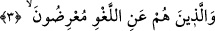
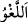

hayırlısına mı? Ey Âdemoğlu bana yönel. Ben senin yöneldiğin kimseden daha
hayırlıyım.”[64] buyrulmuştur.
et-Te’vîlâtü’n-Necmiyye’de der ki: “Onlar ki, namazlarında” hem zâhir hem de bâtın
ile “huşû içindedirler.” Zâhirde olan huşû şöyledir: Başın huşûu öne eğilmesi, gözün
huşûu etrafa bakmaya kapatılması, kulağın huşûu dinlemeye âmâde olması, dilin huşûu
kıraat, huzur ve teennî, ellerin huşûu köleler gibi tâzim ile sağ elin sol el üzerine
konulması, sırtın huşûu rükûda eğilip düz olması, avret yerinin huşûu şehevânî havâtırı
uzaklaştırmakla ve ayakların huşûu yerde sâbit olması ve hareketten sükûn
bulmasıyladır.
Bâtında olan huşû ise şöyledir: Nefsin huşûu havâtır ve hevâcisten sükûn bulması,
kalbin huşûu zikre sarılmak ve huzûra devam ile, sırrın huşûu mükevvenâta azıcık bir an
bile bakmayı terk konusunda murâkabe ile, rûhun huşûu muhabbet denizinde istiğrâkı,
cemal ve celâl sıfatının tecellîsi sırasında erimesidir.”
Hakikat ehli birisi şöyle buyurmuştur: Namazda kişinin önce kendinden geçmesi,
mâsivâyı terk etmesi, sonra dostun mânevî visalini talep ederek O’nun kurbiyyetine
geçmesi gerekir.
Dost senden bîzardır, usanmıştır senden senlikten
Sen önce kendinden kendini terk et
Eğer sende senliğinden bir zerre bâkî kalmışsa
Hırka ve tesbihi zünnar ile terk et
Kendini de her iki âlemi de terk et ve git
Bir zerre miktarı da olsa mâsivâyı düşünme, Attâr gibi ol!
3. Onlar ki, boş ve yararsız şeylerden yüz çevirirler;
“Onlar ki, boş ve yararsız şeylerden” kendilerine faydası olmayan sözlerden ve
fiillerden “yüz çevirirler”
el-Müfredât’ta der ki: “Boş ve faydasız (lağv) söz, düşünüp taşınmadan söylenen
sözdür. Rastgele ve düşünmeden söylenir. Serçe ve benzeri kuşların sesleri yerindedir.”
et-Te’vîlâtü’n-Necmiyye’de der ki: “__WORD__ Allah için olmayan her fiil, Allah’tan
olmayan her söz, Allah’tan başkasını görmektir. Seni Allah’tan alıkoyup meşgul eden
her şey lağvdir, boş ve faydasızdır.
Kâşifî “Kuşeyrî’den naklen şöyle demiştir: “Allah Teâlâ için olmayan her nesne
“haşv”dir. Hak Teâlâ’dan alıkoyan şey “sehv”dir. Kulun lezzet ve haz aldığı şey
“lehv”dir. Allah’tan, Allah için olmayan şey “lağv”dir. Gerçek şu ki söz ve
davranışlardan hiç bir işe yaramayan şeye “lağv” denir.”